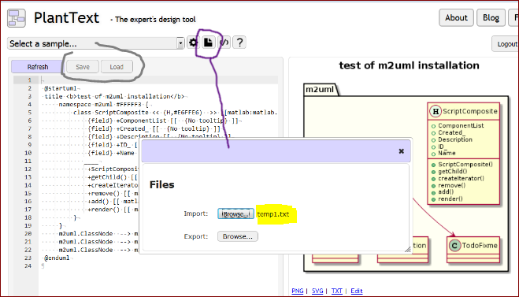
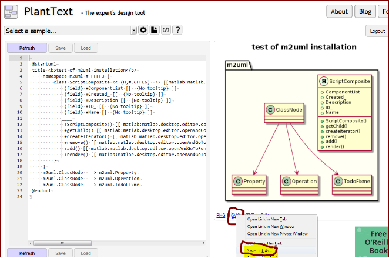
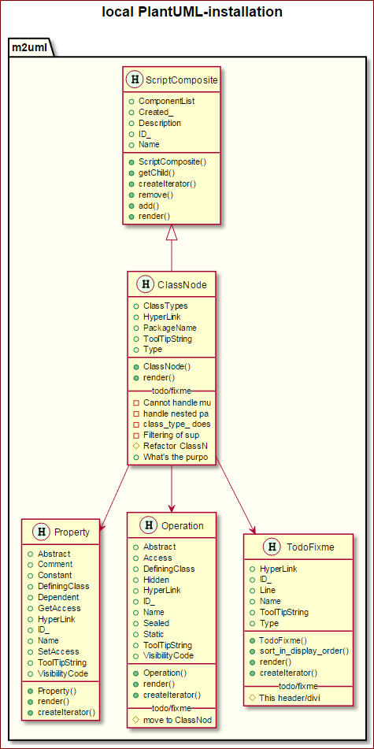
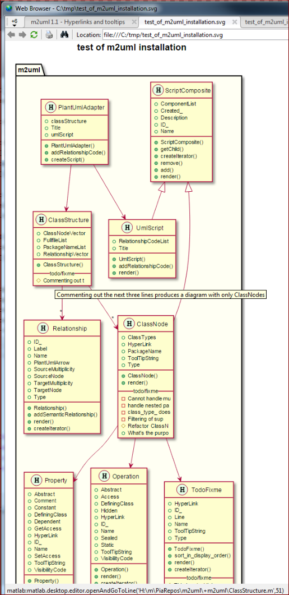
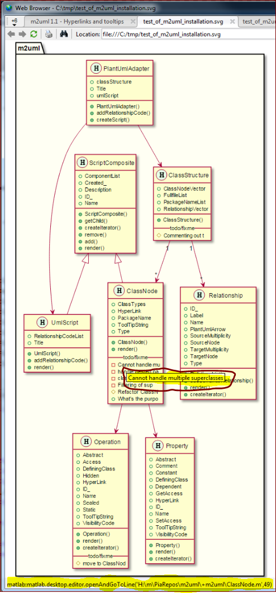
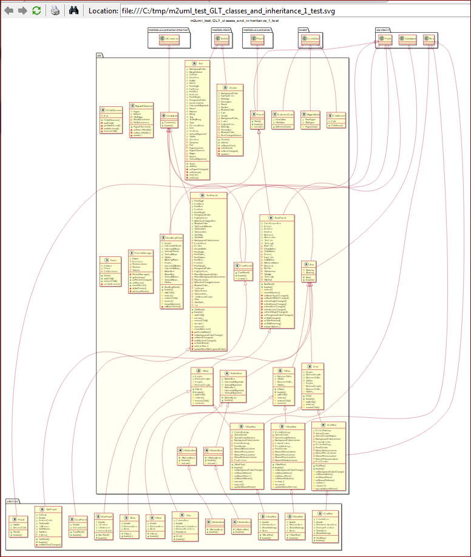
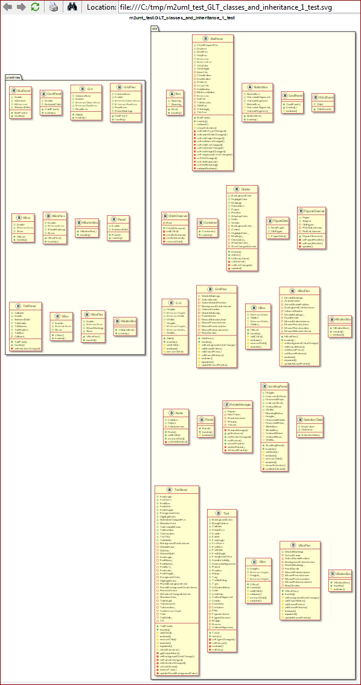
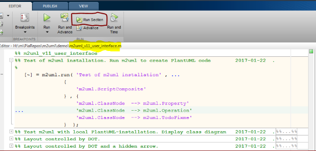

m2uml 1.1 - Hyper-links and tool-tips
m2uml 1.1 includes new feaures
- The class diagram can now be displayed in the web browser of Matlab - preferably on a second monitor.
- The names of classes and methods are hyper-linked to appropriate lines in the m-file.
- Hovering over the names of classes and methods shows the appropriate H1-line in a tool-tip.
- The class box has an extra compartment with hyper-links and tool-tips of FIXME and TODO annotations in the code.
Thus, m2uml 1.1
- shows a class diagram as did m2uml 1.0
- supports navigation of the source code
- provides a bit of documentation and backlog
I think this will be helpful:
- The class diagram itself provides an overview of the program under development, which will remind the user of the design.
- The hyper-links make the class diagram a navigation tool.
- The tool-tips will make the H1-lines and likewise the TODO/FIXME annotations more accessible. That in turn makes it wortwhile to put more effort into writing and maintaining these texts.
Contents
Running m2uml together with PlantText
PlantText is a service on the Internet, which replaces a local installations of PlantUML and Graphviz. However, it takes several interactive steps to use it
1. run m2uml.run to create PlantUML-code in an editor document.
[~] = m2uml.run( 'test of m2uml installation' , ... { 'm2uml.ScriptComposite' } , { 'm2uml.ClassNode --> m2uml.Property' 'm2uml.ClassNode --> m2uml.Operation' 'm2uml.ClassNode --> m2uml.TodoFixme' } );
2. save the document with the extension .txt to the disk, e.g. temp1.txt. (PlantText doesn't accept .uml.)
3. open PlantText (https://www.planttext.com/) in a browser (other than Matlab's Web Browser).
4. import the file to PlantText, which instantly creates the diagram (or click Refresh). The text, "Thanks to PlantUML [...] and your PlantUML has been saved to your computers local storage." appears at the bottom of PlantText page. I assume that PlantText uses a PlantUML services and that "local storage" refers to the server, on which PlantText is running.

5. Save Link As the svg-file to a disk file, e.g. temp1.svg

6. Open the svg-file in the Matlab's Web Browser.
web('h:\m\FEX\Upload\m2uml\pics\temp1.svg','-new')

Hotspots. The hotspot areas of the properties and the methods are the extent of their text strings, respectively. The hotspot of the class name is the entire class box, but the hotspots of the properties and methods. There is no gaps between the hotspots. Thus, hovering over the right bottom corner of the box will show the tool-tip of the class name.
Shortcommings of PlantText
I had to cut down on the above test to make it pass. That's because PlantText revealed some shortcommings (2017-01-11)
- PlantText cannot handle the long lines, which results from including hyper-links and tool-tips. (These features were added to PlantUML late last autumn.)
- PlantText is picky regarding the extension of the file containing the PlantUML-code. .txt is ok.
- Save and Load seems to be greyed out. That doesn't affect this test.
Local installations of PlantUML and Graphviz
Two reasons to install PlantUML are
- capacity to handle long lines
- speed
PlantUML, http://plantuml.com/starting, describes how to make a local installation. My installation is
H:\>java -jar c:\_MyPrg\PlantUML\plantuml.jar -version PlantUML version 8049beta6 (8049beta6) (GPL source distribution) Java(TM) SE Runtime Environment Java HotSpot(TM) Client VM 1.8.0_111-b14 ... The environment variable GRAPHVIZ_DOT has not been set Dot executable is c:\Program Files (x86)\Graphviz2.38\bin\dot.exe Dot version: dot - graphviz version 2.38.0 (20140413.2041) Installation seems OK. File generation OK
Run with the local installation of PlantUML
m2uml.call_local_PlantUML ... ( 'Title' , 'local PlantUML-installation' ... , 'Classes' , { 'm2uml.ScriptComposite' 'm2uml.ClassNode' 'm2uml.Property' 'm2uml.Operation' 'm2uml.TodoFixme' } ... , 'Arrows' , { 'm2uml.ClassNode --> m2uml.Property' 'm2uml.ClassNode --> m2uml.Operation' 'm2uml.ClassNode --> m2uml.TodoFixme' } ... ); %

Attempt to control the layout
The PlanUML says "Help on layout. Sometimes, the default layout is not perfect..." (http://plantuml.com/class-diagram#layout). The layout is affected by
- The order in which the classes are defined in the PlantUML-script. The order given in the input to m2uml is carried over to the PlantUML-script and to the diagram: top-down and left-right.
- The direction of the arrows play a major role.
However, accept that in the end DOT rules. The Grapviz documentation says:
2.6 Node and Edge Placement [...] Fine-tuning should be approached cautiously. dot works best when it can makes a layout without much “help” or interference in its placement of individual nodes and edges. Layouts can be adjusted somewhat by increasing the weight of certain edges, or by creating invisible edges or nodes using style=invis, and sometimes even by rearranging the order of nodes and edges in the file. But this can backfire because the layouts are not necessarily stable with respect to changes in the input graph. One last adjustment can invalidate all previous changes and make a very bad drawing.
Let PlantUML take care of the layout and see what happens.
m2uml.call_local_PlantUML ... ( 'Title' , 'layout controlled by DOT' ... , 'Classes' , { 'm2uml.ClassStructure' 'm2uml.ClassNode' 'm2uml.Property' 'm2uml.Operation' 'm2uml.TodoFixme' 'm2uml.PlantUmlAdapter' 'm2uml.Relationship' 'm2uml.ScriptComposite' 'm2uml.UmlScript' } ... , 'Arrows' , { 'm2uml.ClassStructure "1" --> "*" m2uml.ClassNode' 'm2uml.ClassStructure "1" --> "*" m2uml.Relationship' 'm2uml.ClassNode --> m2uml.Property' 'm2uml.ClassNode --> m2uml.Operation' 'm2uml.ClassNode --> m2uml.TodoFixme' 'm2uml.PlantUmlAdapter --> m2uml.ClassStructure' 'm2uml.PlantUmlAdapter --> m2uml.UmlScript' } ... );

And next try to help PlantUML a bit by adding a hidden arrow, 'm2uml.ClassNode -[hidden]left-> m2uml.UmlScript'.
m2uml.call_local_PlantUML ... ( 'Title' , 'layout modified by a hidden arrow' ... , 'Classes' , { 'm2uml.ClassNode' 'm2uml.ClassStructure' 'm2uml.Operation' 'm2uml.PlantUmlAdapter' 'm2uml.Property' 'm2uml.Relationship' 'm2uml.ScriptComposite' 'm2uml.UmlScript' } ... , 'Arrows' , { 'm2uml.ClassStructure "1" --> "*" m2uml.ClassNode' 'm2uml.ClassStructure "1" --> "*" m2uml.Relationship' 'm2uml.ClassNode --> m2uml.Property' 'm2uml.ClassNode --> m2uml.Operation' 'm2uml.PlantUmlAdapter --> m2uml.ClassStructure' 'm2uml.PlantUmlAdapter --> m2uml.UmlScript' 'm2uml.ClassNode -[hidden]left-> m2uml.UmlScript' } ... );

Can m2uml help learning a new code-base?
This is just a quick test with the File Exchange contribution, GUI Layout Toolbox by David Sampson.

And without arrows (done with a trick)

User Interface
m2uml asks for a GUI, but I'm postponing making one and run m2uml from scripts like m2uml_v11_user_interface.m.
- Select a section and
- press the button, Run Selection.

The specific layout of the call makes it easy to
- copy&paste input strings
- comment out input strings with ...
- add comments
And Collapse All turns the script into a table of content.